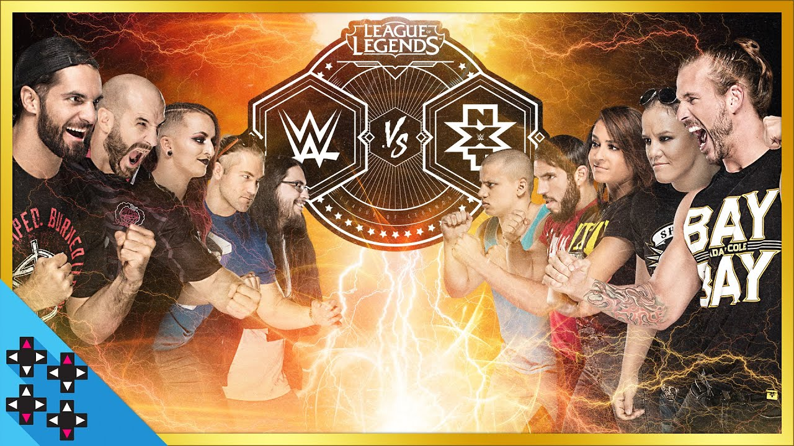
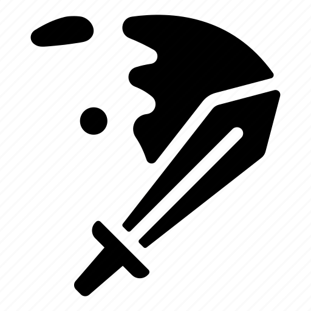
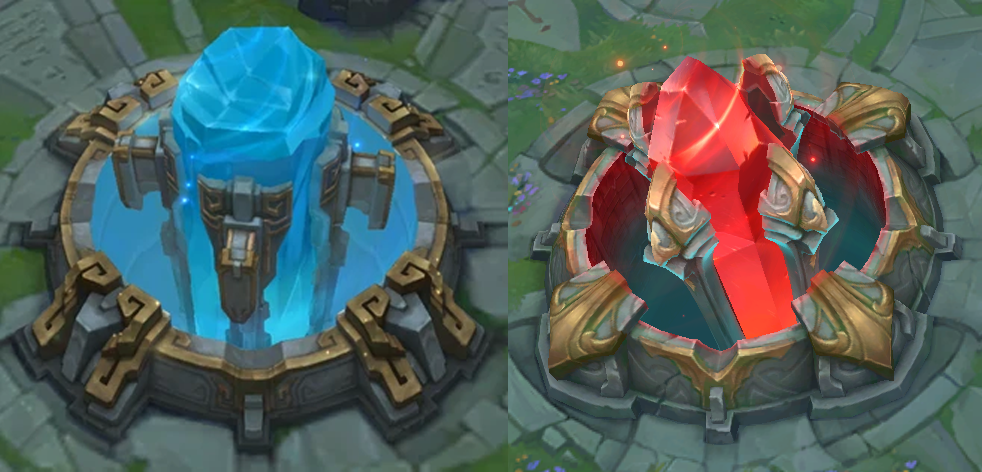

Bienvenidos invocador
Le damos la bienvenida a la Liga de las Leyendas
¿Qué te parece si lo descargamos en este preciso momento y descubrimos juntos como se juega?
Es fácil de aprender, funciona de esta manera: 2 equipos de 5 jugadores deben destruir la base enemiga Es fácil de aprender, funciona de esta manera: 2 equipos de 5 jugadores deben destruir la base enemiga



- Elijes a Garen, te gusta Garen ,es fácil matar a tus enemigos con Garen. Al principio no necesitas ser experto por qué el juego te posiciona con otros jugadores de tu mismo nivel, esto significa que podrás mejorar con solo jugar y divertirte.
No hay nada como ganar en League of Legends al lado de 4 nuevos aliados... ¿Hermoso, verdad?
- Pero piensa que jugar con un grupo de amigos que ya conoces podría ser igual de divertido: Tú podrías ser el tanque, tus amigos pueden ser soportes, arqueros, asesinos o incluso magos, hay muchos roles para escoger según la estrategia que quieras
que siga tu campeón durante la partida y con el tiempo comienzas a dominar otros campeones, como Lux con sus poderosos hechizos, a Darius con quien probablemente consigas tu primer Pentakill o Teemo la tierna encarnación de toda la maldad
del universo, ya te gustan estos campeones, cada uno con su estilo de juego, aprenderas mas sobre las historias únicas de cada uno y verás como su origen se conecta con sus poderes, hay todo un universo por explorar.
- Después conocerás otra característica del juego: Las partidas clasificatorias, en las que tus resultados determinan tu posición en un sistema de ligas y divisiones, podrías jugar esto para siempre, pero tómalo con calma y solo diviértete, por
que LoL te ofrece un sinfín de experiencias incluso sin competir por un puntaje, por qué esto es League of Legends: Es dinámico, intuitivo y siempre diverso. Cuanto más juegas más te enamoras del juego y después de cada partida no evitaras
volver a jugar. Todo eso y más te espera si descargas League of Legends:

Tú decides
Original